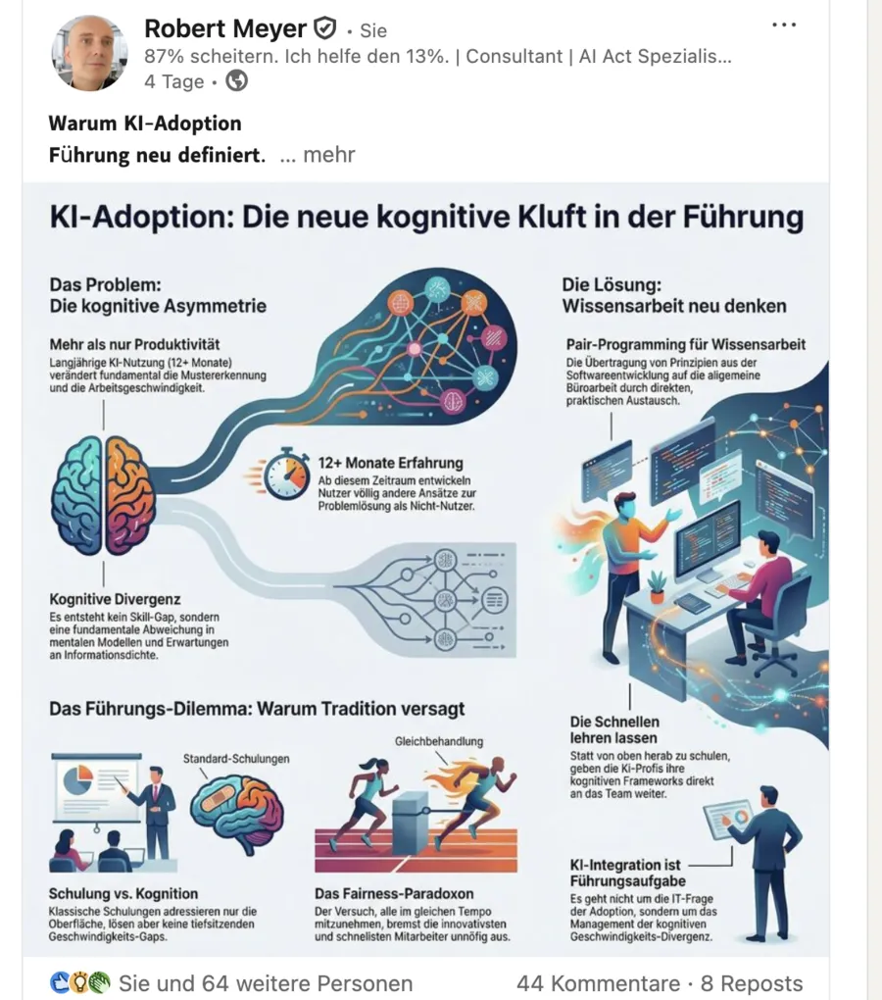
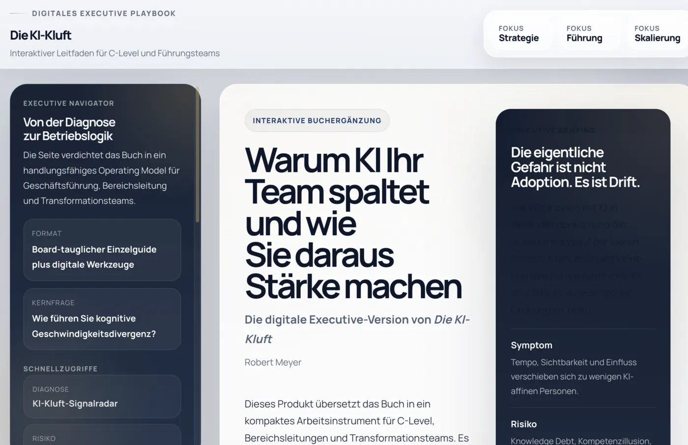
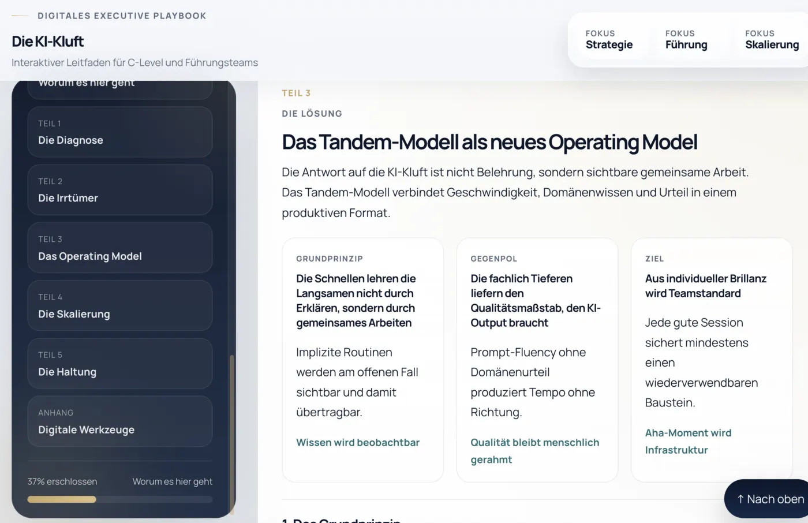
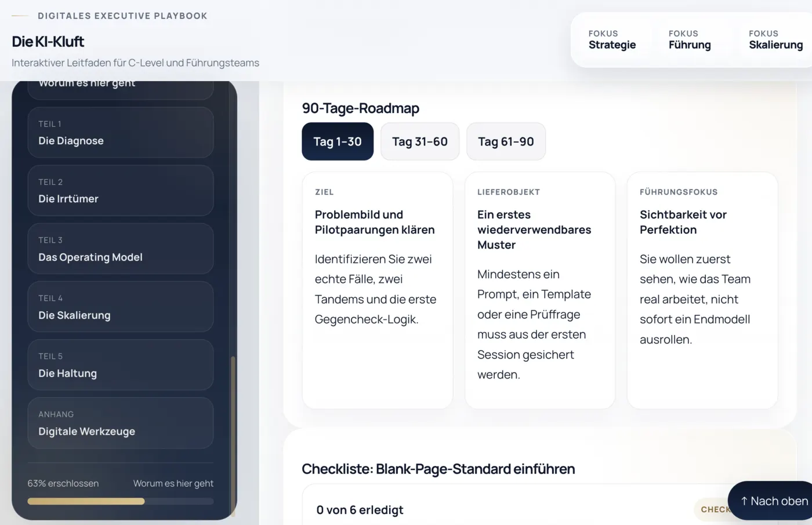
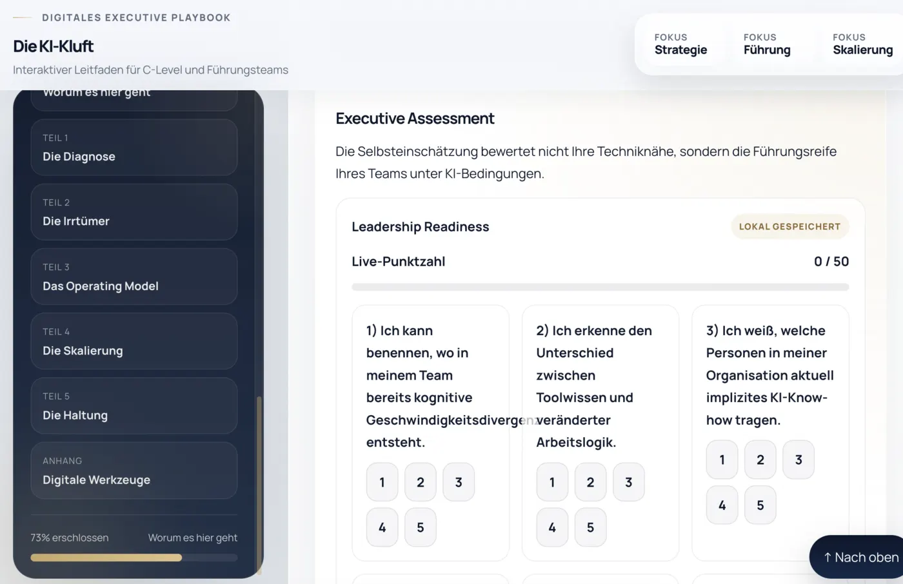

Kapitel V · Was macht das mit uns?
Die KI-Kluft
Warum KI Ihr Team spaltet, und wie Sie daraus Ihren größten Vorteil machen
Die KI-Kluft ist ein Führungsproblem, kein Werkzeugproblem. Menschen im selben Team arbeiten plötzlich in unterschiedlichen Geschwindigkeiten, mit unterschiedlichen Routinen und unterschiedlichen Vorstellungen von Qualität.
Das Buch zeigt, wie daraus stille Reibung, Knowledge Debt und Kompetenzillusion entstehen, und wie Sie mit dem Tandem-Modell wieder Zusammenarbeit daraus machen.
- Geschäftsführung
- Bereichsleitungen
- Transformationsteams
Kurzvorstellung zum Anhören, ca. 90 Sekunden
Das Problem
Die gefährlichste KI-Spaltung im Unternehmen sieht man meistens nicht.
Sie zeigt sich zuerst im Takt, nicht im Konflikt. Die einen kommen mit Varianten und Vorstrukturierung aus einer Aufgabe zurück, die anderen sitzen noch am ersten Entwurf. Daraus entstehen Reibung, Abhängigkeit und falsche Eindrücke von Leistung.
- Deloitte 202593 % / 7 %
der KI-Budgets fließen in Technik, kaum etwas in Menschen und Arbeitsfähigkeit.
- Dayforce 202587 % / 27 %
Führungskräfte nutzen KI breit, Mitarbeitende deutlich seltener.
- RisikoKnowledge Debt
Produktive KI-Arbeitsweisen stecken in wenigen Köpfen und werden zur stillen Infrastruktur.
- IllusionOutput ≠ Urteil
Plausibel klingender KI-Text ersetzt weder Verantwortung noch den kritischen Gegencheck.
- Signal 1
Die unsichtbare Spaltung
Teams driften auseinander, ohne dass jemand das Problem benennt. Sichtbar wird vor allem Tempo.
- Signal 2
Knowledge Debt
Einige wenige tragen eine komplette neue Arbeitslogik, die nirgends dokumentiert ist.
- Signal 3
Kompetenzillusion
Schneller, glatter Output wirkt kompetenter, obwohl der eigentliche Qualitätsmaßstab oft unsichtbar bleibt.
Warum dieses Buch anders ist
Ein Buch über kognitive Spaltung im Team.
Über KI, Führung und Wandel gibt es viele Bücher. Die KI-Kluft beantwortet eine engere, praktischere Frage: Was tun Sie, wenn ein Teil Ihres Teams mit KI schon in einer anderen Liga arbeitet als der Rest?
Typische KI-Bücher
Viel Überblick, wenig Betriebsmodell
Sie erklären Chancen, Risiken und Werkzeuge, bleiben aber oft bei Strategie, Kultur oder allgemeiner Einführung stehen.
Die KI-Kluft
Ein konkretes Führungsmodell für echte Teams
Im Mittelpunkt steht das Tandem-Modell: ein praxistauglicher Weg, um unterschiedliche Geschwindigkeiten, Knowledge Debt und Kompetenzillusion in Teamfähigkeit zu übersetzen.
Das Modell
Das Tandem-Modell macht aus Tempo und Fachurteil gemeinsame Arbeitsfähigkeit.
Die Antwort auf die KI-Kluft heißt nicht, alle gleich schnell zu machen. Sie heißt, die Unterschiede so zu ordnen, dass KI-Routine und Fachwissen sich ergänzen.
Echter Fall statt Demo
Das Modell beginnt am offenen Problem mit echtem Zeit- und Qualitätsdruck, nicht im Seminarraum.
KI-Routine trifft Fachwissen
Die eine Seite bringt methodische KI-Erfahrung ein, die andere fachliche Tiefe, Risikobewusstsein und Kontext.
Gemeinsam arbeiten statt vorführen
Arbeitsweisen werden sichtbar, weil zwei Menschen am selben Fall denken, prüfen und nachschärfen.
Gegencheck als Kernkompetenz
Geschwindigkeit ohne Gegencheck ist keine Stärke. Sie ist eine neue Form von Risiko.
Vom Aha zum Teamstandard
Jede gute Sitzung mündet in Vorlagen, feste Prüfschritte und wiederverwendbare Muster.
Gleicher Takt, unterschiedliche Stärken
Das Ziel ist eine gemeinsame Arbeitslogik, keine Gleichförmigkeit.
Was Sie mitnehmen
Für Führungskräfte, die Teamarbeit neu ordnen müssen.
Frühdiagnose
Sie erkennen die KI-Kluft, bevor sie offene Konflikte erzeugt.
Knowledge Debt sichtbar machen
Sie sehen, wo Ihre Organisation an einzelnen Power-Usern hängt, und entschärfen das systematisch.
Kompetenzillusion vermeiden
Sie verstehen, warum schneller Output nicht automatisch besseres Urteil bedeutet.
Tandems aufsetzen
Sie bekommen ein belastbares Format, mit dem KI-Arbeitsweisen im Team anschlussfähig werden.
Standards statt Zufall
Sie sehen, wie Blank-Page-Verbot, Vorlagen und feste Prüfschritte in der Praxis wirken.
Führung neu ausrichten
Sie verlassen die Werkzeugdebatte und arbeiten an Verantwortung, Urteil und Haltung.
Für wen
Für alle, die unterschiedliche Geschwindigkeiten im Team führen müssen.
Geschäftsführung und Vorstand
Für Entscheider, die sehen, dass KI den Takt der Wissensarbeit verändert und damit zur Führungsfrage wird.
Bereichs- und Teamleitungen
Für Führungskräfte, die Leistung, Fairness und Qualität in echten Teams ausbalancieren.
Transformation, HR und Weiterbildung
Für Verantwortliche, die KI-Einführung als Veränderung der Arbeitslogik verstehen und nicht als Software-Rollout.
Resonanz
Das Thema ist in den Führungsetagen längst angekommen.
Ausgangspunkt des Buches war neben der Beratungspraxis ein LinkedIn-Beitrag über kognitive Asymmetrie in Teams. Die Kommentare zeigten: Viele Führungskräfte erleben das Phänomen bereits, haben aber noch keine Sprache und keine Formate dafür.
Genau dort setzt das Buch an, mit einer Managementfrage, die in Teams schon wirkt.
Zum LinkedIn-Beitrag (neuer Tab)
Interaktive Erweiterung
Vom Lesen ins Umsetzen: der interaktive Leitfaden zum Buch.
Das Buch liefert die Managementlogik. Der Leitfaden übersetzt sie in Werkzeuge für echte Teamsituationen: Diagnose, Checklisten, Vorlagen, Prompt-Bausteine und Umsetzungsroutinen. Einsetzbar allein, im Führungskreis oder als Arbeitsinstrument für die ersten Wochen.
- Modul 1
Diagnose für Führungskräfte
Die KI-Kluft im eigenen Team sichtbar machen, als strukturiertes Bild statt Bauchgefühl.
- Modul 2
Tandem- und Sitzungshilfen
Checklisten, Rollenmodelle und Bausteine für gemeinsame Arbeitssitzungen und Standards im Alltag.
- Modul 3
Vorlagen und Prompt-Bibliothek
Wiederverwendbare Vorlagen für Übergaben, Vorstandsvorlagen, Entscheidungsnotizen und Führungsgespräche.

Diagnose, Großansicht in neuem Tab 
Führungsnavigator, Großansicht in neuem Tab 
Checklisten und Vorlagen, Großansicht in neuem Tab 
Umsetzung im Team, Großansicht in neuem Tab
Zum Schluss
Wenn KI Ihr Team schneller macht, ist das zuerst eine Führungsaufgabe.
Mit klarer Sprache, belastbaren Formaten und einer Führungslogik, die in echte Teams passt.
Praxis-Updates
Neues zur KI-Kluft, einmal im Monat
Kurze Hinweise zu neuen Werkzeugen, Leseproben, Praxisformaten und Weiterentwicklungen rund um das Buch. Kein Spam, jederzeit abbestellbar.